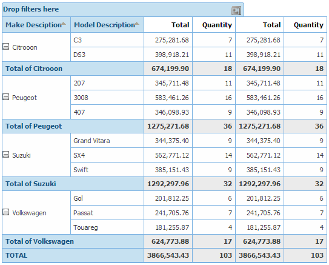

They are the attributes or expressions included in the query. ExampleIn the query SalesByMakeModel (shown in the figure below), the Query Elements are the MakeDsc, ModeDsc attributes and the formula that follows them.
The Query object SalesByMakeModel, embedded in a Query Viewer Control, at runtime:
|